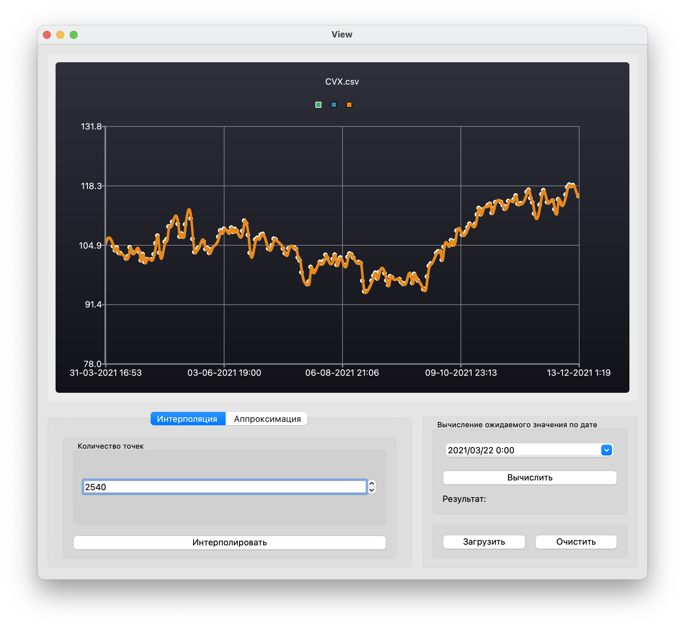
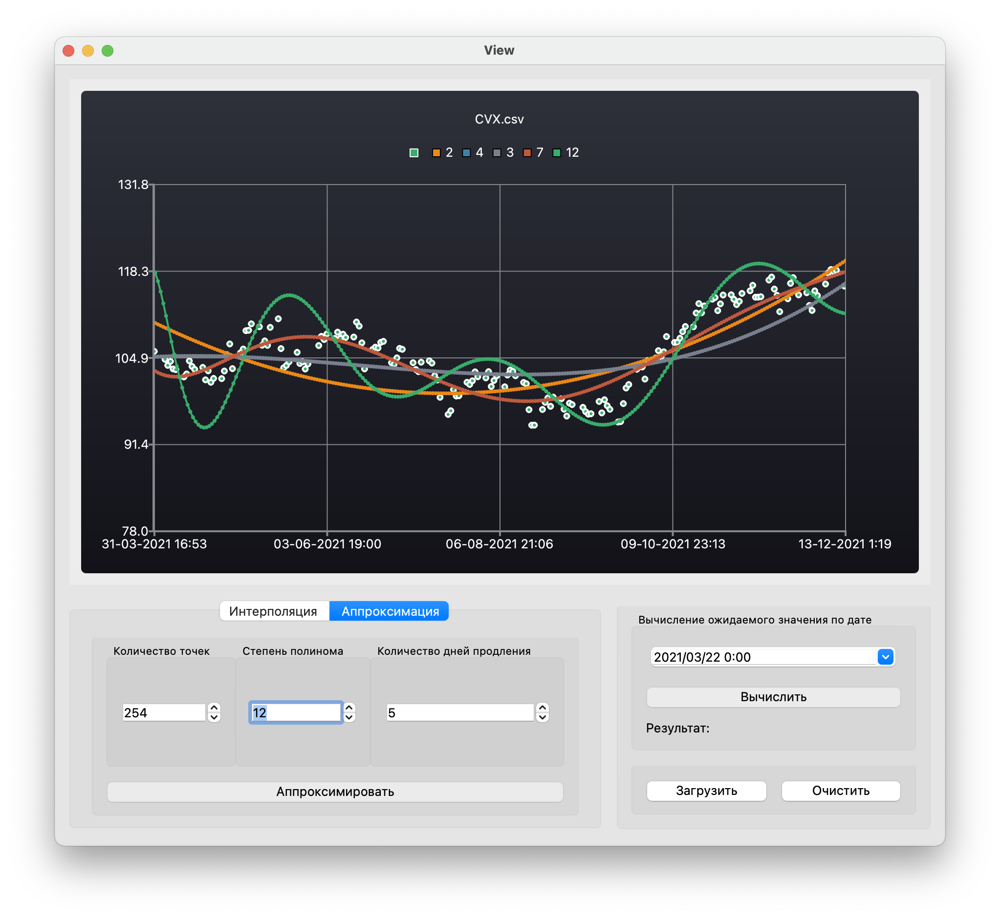

Данный проект представляет собой реализацию алгоритмов интерполяции и аппроксимации.
В программе реализован графический пользовательский интерфейс, на базе GUI-библиотеки Qt
В исходных файлах данные представлены в виде таблицы, где первый столбец - дата,
второй столбец - значение функции
При загрузке нового файла с данными поле для рисования графиков очищается.
Пользователем задаётся количество точек, по которым построен график (количество точек не меньше, чем в загруженном файле).
Все точки распределены равномерно между начальной и конечной датами.
Интерполяция методом кубических сплайном.
Интерфейс:
* Кнопка для отрисовки графика, полученного кубическим сплайном
* Кнопка очистки поля для рисования графиков (поле очищается только при нажатии на эту кнопку или загрузке новых данных)
* Поле для ввода значения аргумента (дата и время)
На поле может быть одновременно изображено до 5 графиков (при этом все графики разного цвета), если на поле уже отображено 5 графиков,
то кнопки отрисовки новых графиков блокируются.
В интерфейсе указана следующая информация о графиках:
* Цвет
* Имя файла, из которого были взяты данные

Аппроксимация методом наименьших квадратов.
На графике явно отмечены точки, заданные в загруженном файле:
* Радиус этих точек больше толщины кривой графика
* Цвет этих точек не совпадает с цветами графиков на поле
Пользователем задается количество дней M, на которое нужно продлить график (на сколько дней вперёд мы хотим предсказать курс акций)
При добавлении на поле отрисовки нового графика аппроксимации, у которого M отличается от M уже отрисованных графиков, предварительно выполняется очистка поля отрисовки
На поле может быть одновременно изображено до 5 графиков с одним и тем же значением числа дней M (при этом все графики разного цвета)
Интерфейс:
* Кнопка для отрисовки графика, полученного полиномом заданной в данный момент степени
* Поле для ввода степени полинома
* Кнопка очистки поля для рисования графиков аппроксимации
В интерфейсе указана следующая информация о графиках:
* Цвет
* Файл, из которого взяты данные
* Степень полинома
На поле может быть одновременно изображено до 5 графиков (при этом все графики разного цвета), если на поле уже отображено 5 графиков,
то кнопки отрисовки новых графиков блокируются.

Thank you.